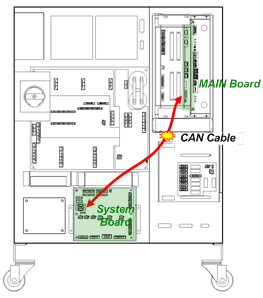
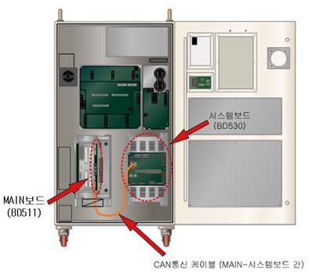
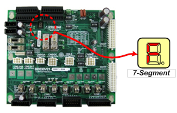
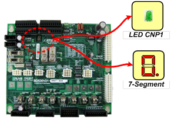
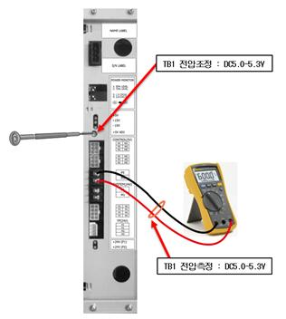

기존 에러코드: E0022 내부모듈간 통신이상
1.1.88.1. 개요
제어기 전원을 투입하면 MAIN보드는 시스템보드와 통신을 개통해야 합니다. 그런데 시스템보드와의 통신이 정상적으로 개통되지 않는다면 이 에러가 발생합니다.
1.1.88.2. 원인 및 점검방법
|
(1) CAN통신케이블 접속상태를 확인하십시오. (2) 시스템보드의 프로그램이 제거되었는지 확인하십시오. (3) 전원을 확인하십시오. (4) 시스템보드를 교체하십시오. (5) 메인보드를 교체하십시오. |
(1) CAN통신케이블 접속상태를 확인하십시오.
MAIN보드와 시스템보드간의 CAN케이블이 잘 접속되었는지 확인하십시오. 커넥터의 접촉불량일 수 있으므로 MAIN보드의 CAN커넥터와 시스템보드의 CAN커넥터를 탈착하고 에러발생 여부를 다시 확인하십시오.

(a) Hi5a-S 제어기

(b) Hi5a-N 제어기
그림 1.241 MAIN보드(BD511)와 시스템보드(BD530)의 CAN통신케이블 연결
(2) 시스템보드의 프로그램이 제거되었는지 확인하십시오.
시스템보드의 프로그램이 삭제된 경우에는 7-세그먼트에 “F”를 표시합니다. 이때에는 시스템버전업 기능을 통해 프로그램을 다시 다운로드하십시오.

그림 1.242 시스템보드의 프로그램이 삭제된 경우 7-segment 표시
(3) 전원을 확인하십시오.
시스템보드에 DC 5V 제어전원이 정상적으로 공급되는지를 확인하십시오. 전원에 이상이 있을 경우 시스템보드의 동작이 안되므로 이 에러가 발생할 수 있습니다. 우선은 간단한 방법으로 전원입력 여부를 확인하십시오. 다음 그림과 같이 시스템보드의 좌측 상단에 DC 5V 전압을 나타내는 발광다이오드(LED) CNP1과 보드동작상태를 나타내는 7-세그먼트가 있습니다.
표 1-14 시스템보드 인가전압 정상여부 확인방법
|
구분 |
발광다이오드(LED) CNP1 |
7-세그먼트 |
표시내용 |
|
1 |
소등 |
소등 |
시스템보드에 전원이 정상적으로 인가되지 못하고 있습니다. SMPS, 케이블, 커넥터접속 등의 전원관련 점검을 하십시오. |
|
2 |
점등 |
소등 |
시스템보드의 뒤쪽에 있는 IO관련 보드(BD531)에 전원이 인가되지 않거나 고장입니다. |
|
3 |
점등 |
점등 |
전원전압을 확인하십시오. |

그림 1.243 시스템보드의 DC 5V전원인가 확인
상기의 표와 같이 발광다이오드(LED) CNP1과 7-세그먼트 7-SEGDC이 모두 점등된 상태라면 보드에 인가되고 있는 DC 5V 제어전원 전압이 5.0V~5.3V 영역 이내에 있는지 확인하십시오. 전압이 이 영역 외의 범위에 있다면 통신에 영향을 줄 수 있습니다. 점검위치는 다음 그림과 같으며 만약 범위 밖에 있다면 SMPS에서 전압을 5.0V~5.3V 영역으로 조정하십시오.

그림 1.244 DC 5V전원 전압측정 및 조정방법
(4) 시스템보드를 교체하십시오.
케이블 및 전원확인 후에도 문제가 해결되지 않을 경우에는 시스템보드를 교체하여 점검하십시오.
(5) 메인보드를 교체하십시오.
케이블, 전원확인, 시스템보드 교체 후에도 문제가 해결되지 않을 경우에는 메인보드를 교체하여 점검하십시오.